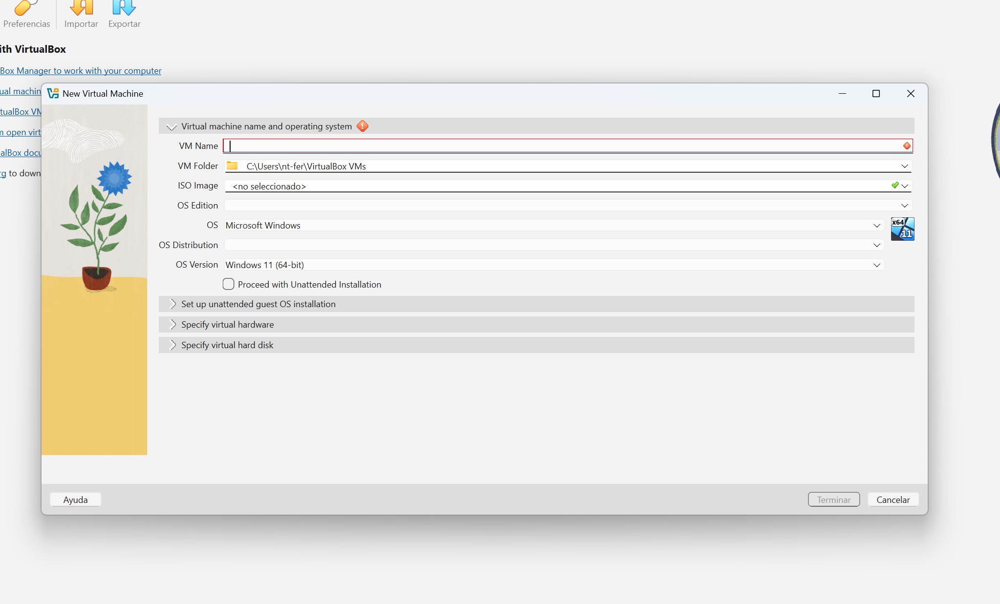
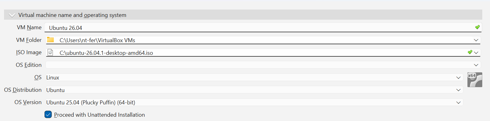
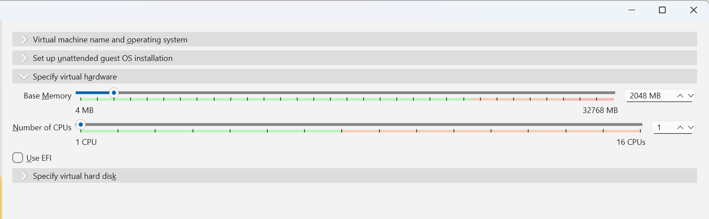
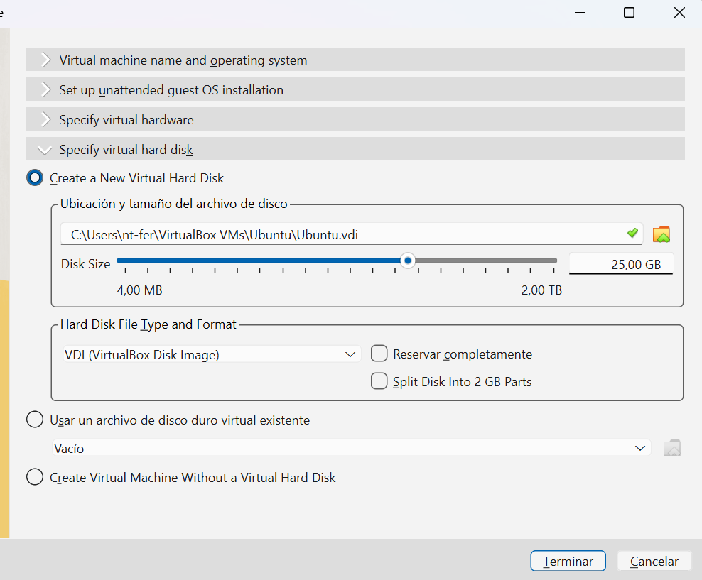
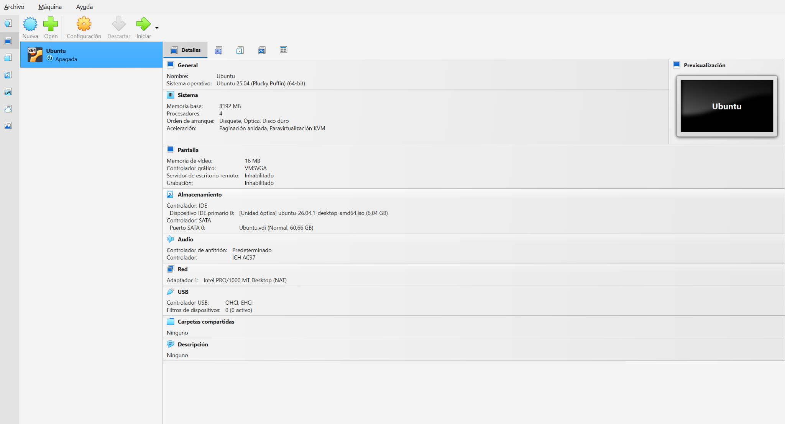
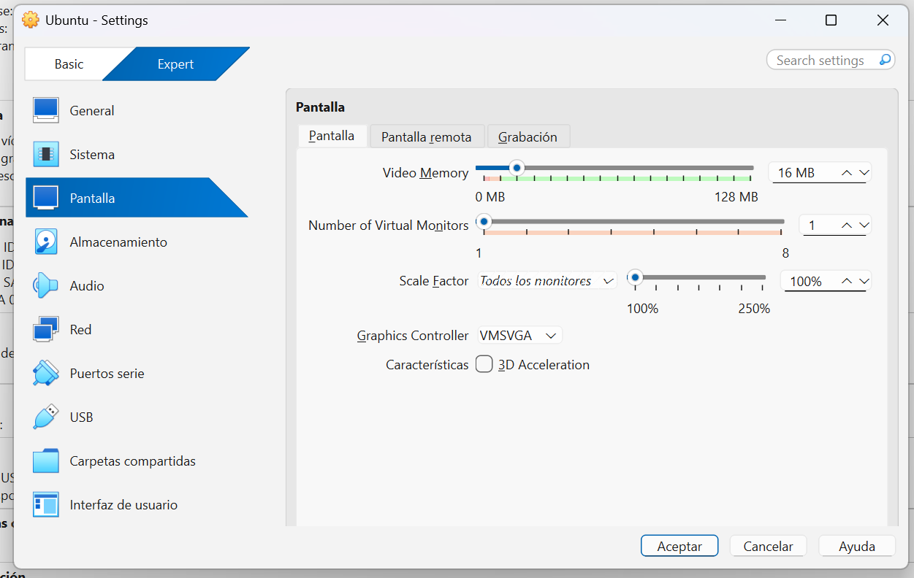
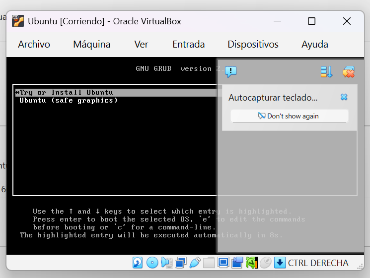
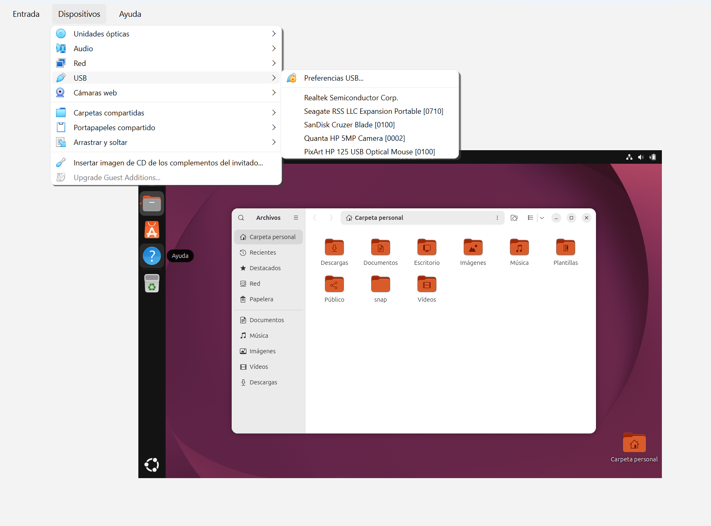

Manual de configuración e instalación de Ubuntu y Programas
1. Componentes necesarios
2. Configuración de VirtualBox e instalación de Ubuntu







Abrir VirtualBox y seleccionar Nueva.
Escribir Ubuntu como nombre y seleccionar la ISO ubuntu-26.04.1-desktop-amd64.iso.
Seleccionar Linux y Ubuntu de 64 bits. Si VirtualBox muestra Ubuntu 25.04 como perfil, esto no cambia la versión contenida en la ISO.
Asignar 8192 MB de RAM y 4 procesadores.
Crear un disco VDI dinámico de aproximadamente 60 GB.
En Pantalla configurar VMSVGA y 128 MB; la aceleración 3D es opcional y puede desactivarse si hay fallos gráficos.
Iniciar la máquina y seleccionar Try or Install Ubuntu.
En el instalador gráfico elegir idioma, teclado, instalación de Ubuntu, zona horaria, usuario y contraseña. Instalar en el disco virtual de la máquina, no en el disco físico de Windows.
3. Configuración inicial de Ubuntu
Abrir Terminal con Ctrl + Alt + T. Actualizar el catálogo de paquetes y el sistema:
sudo apt updatesudo apt upgrade -ysudo apt install -y curl wget ca-certificates gnupg tarComprobar versión y red:
lsb_release -ahostnamectlip aping -c 4 ubuntu.com4. Instalación de Java 21
Instalar explícitamente Java 21, evitando depender de la versión que ofrezca default-jdk:
sudo apt updatesudo apt install -y openjdk-21-jdkjava -versionjavac -versionreadlink -f $(which java)Si el paquete no está disponible en los repositorios configurados, verificar primero las fuentes APT de Ubuntu; no sustituirlo silenciosamente por otra versión.
5. Instalación de PostgreSQL 18
Para obtener la versión 18 cuando no esté en los repositorios predeterminados, agregar el repositorio oficial PostgreSQL (PGDG):
sudo apt install -y postgresql-commonsudo /usr/share/postgresql-common/pgdg/apt.postgresql.org.shsudo apt updatesudo apt install -y postgresql-18Verificar el clúster y el servicio:
psql --versionpg_lsclusterssudo systemctl status postgresqlsudo -u postgres psql -c "SELECT version();"La base PQ10BD y las credenciales deben coincidir con la configuración JDBC real de SICOPP. Si se restaura una copia de seguridad, no crear estructuras manuales incompatibles. Para consultar bases y roles:
sudo -u postgres psql -c "\l"sudo -u postgres psql -c "\du"Para establecer una contraseña de forma interactiva sin escribirla en el historial:
sudo -u postgres psql\password postgres\qEl puerto debe verificarse con pg_lsclusters y con la configuración de la aplicación. No asumir que el puerto 5433 usado en Windows es automáticamente el mismo en Ubuntu.
sudo ss -ltnp | grep postgres6. Instalación de Apache Tomcat 11
Tomcat 11 se distribuye como paquete comprimido. El siguiente procedimiento utiliza una versión elegida desde la página oficial: sustituir VERSION por la versión 11.0.x disponible y comprobar la URL antes de ejecutar.
sudo apt install -y wget tarsudo useradd --system --home /opt/tomcat --shell /usr/sbin/nologin tomcatcd /tmpVERSION=11.0.Xwget "https://dlcdn.apache.org/tomcat/tomcat-11/v${VERSION}/bin/apache-tomcat-${VERSION}.tar.gz"sudo mkdir -p /opt/tomcatsudo tar -xzf "apache-tomcat-${VERSION}.tar.gz" -C /opt/tomcat --strip-components=1sudo chown -R tomcat:tomcat /opt/tomcatsudo chmod +x /opt/tomcat/bin/*.shVERSION=11.0.X es un marcador, no una versión descargable literal. Consultar https://tomcat.apache.org/download-11.cgi para obtener el número correcto.Determinar la ruta JAVA_HOME:
dirname $(dirname $(readlink -f $(which java)))Crear el servicio:
sudo nano /etc/systemd/system/tomcat.service[Unit]Description=Apache Tomcat 11After=network.target[Service]Type=forkingUser=tomcatGroup=tomcatEnvironment=JAVA_HOME=/usr/lib/jvm/java-21-openjdk-amd64Environment=CATALINA_HOME=/opt/tomcatEnvironment=CATALINA_BASE=/opt/tomcatEnvironment=CATALINA_PID=/opt/tomcat/temp/tomcat.pidExecStart=/opt/tomcat/bin/startup.shExecStop=/opt/tomcat/bin/shutdown.shRestart=on-failure[Install]WantedBy=multi-user.targetAjustar JAVA_HOME a la ruta obtenida en el equipo, guardar y ejecutar:
sudo systemctl daemon-reloadsudo systemctl enable --now tomcatsudo systemctl status tomcatss -ltnp | grep 8080Abrir http://localhost:8080 desde Firefox en Ubuntu.
7. Instalación del controlador JDBC
Tomcat necesita que el archivo JAR de JDBC esté disponible para la aplicación. Si ya está dentro de SICOPP.war/WEB-INF/lib, no es necesario duplicarlo. En caso contrario, descargar la versión 42.7.10 desde el sitio oficial de pgJDBC y copiarla a la biblioteca del despliegue o a /opt/tomcat/lib, según el diseño de la aplicación.
jar tf SICOPP.war | grep -i postgresqlSi se utiliza /opt/tomcat/lib, reiniciar Tomcat después de copiar el JAR. La disponibilidad del controlador no garantiza por sí sola que las credenciales, el host y el puerto sean correctos.
8. Instalación de la aplicación web
Colocar el WAR en la carpeta de despliegue de Tomcat, suponiendo que el archivo se encuentra en Descargas:
sudo cp ~/Descargas/SICOPP.war /opt/tomcat/webapps/sudo chown tomcat:tomcat /opt/tomcat/webapps/SICOPP.warsudo systemctl restart tomcatsudo journalctl -u tomcat -n 80 --no-pagerComprobar en el navegador:
http://localhost:8080/SICOPP/Importante: Tomcat 11 usa jakarta.servlet.*, mientras que proyectos JSP/Servlet anteriores pueden usar javax.servlet.*. Antes de considerar exitoso el despliegue, confirmar que el WAR es compatible con Tomcat 11.
9. Comprobación de la instalación

Entorno de Ubuntu Desktop en funcionamiento
Verificar java -version, psql --version, pg_lsclusters, estado de Tomcat, puerto 8080 y carga de SICOPP. El hecho de que aparezca el formulario de inicio de sesión no confirma que la conexión a la base funcione. Mantener respaldos del WAR y la base, restringir las interfaces administrativas y no exponer PostgreSQL a redes externas sin necesidad.